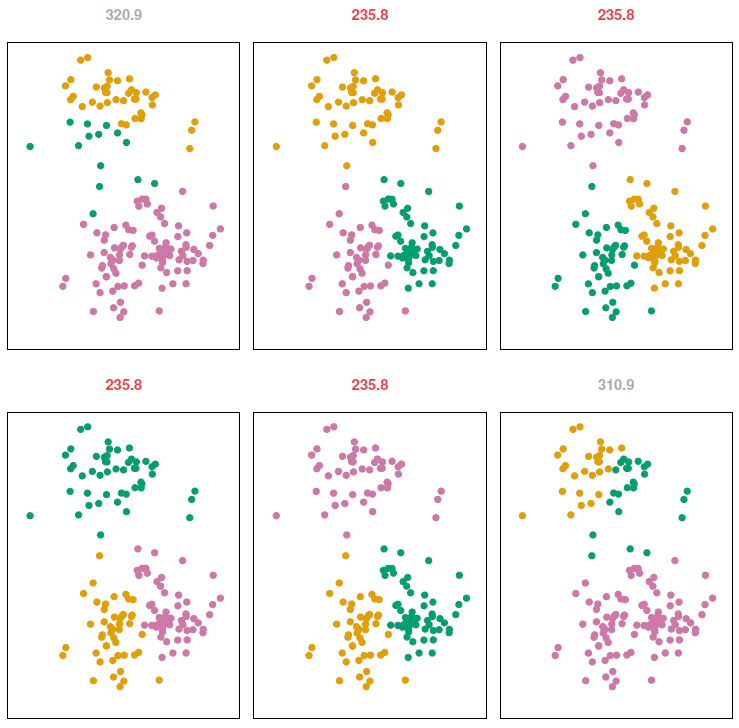
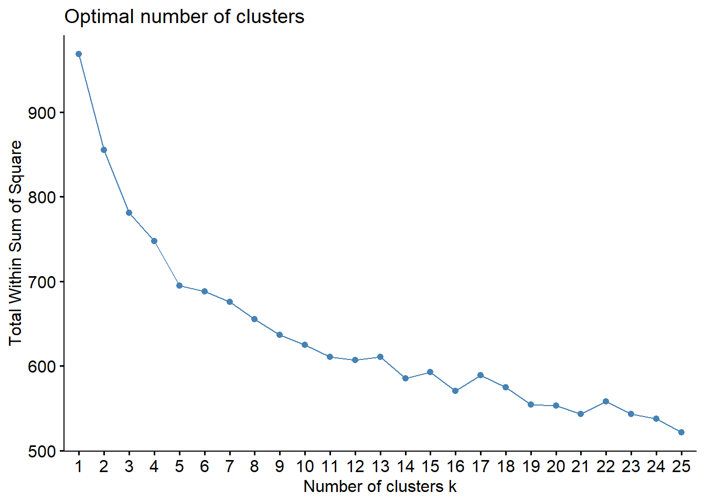
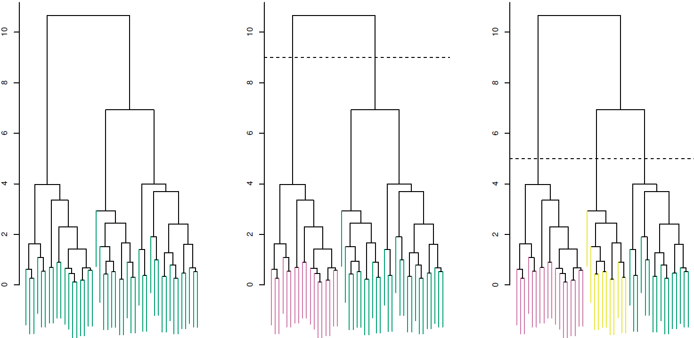
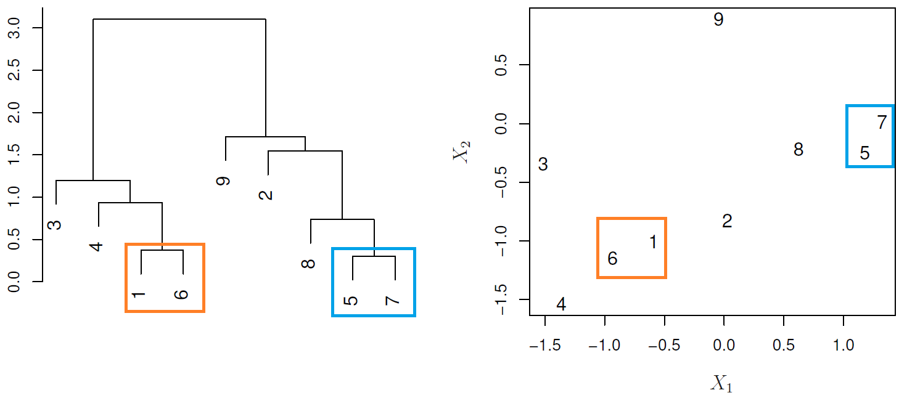
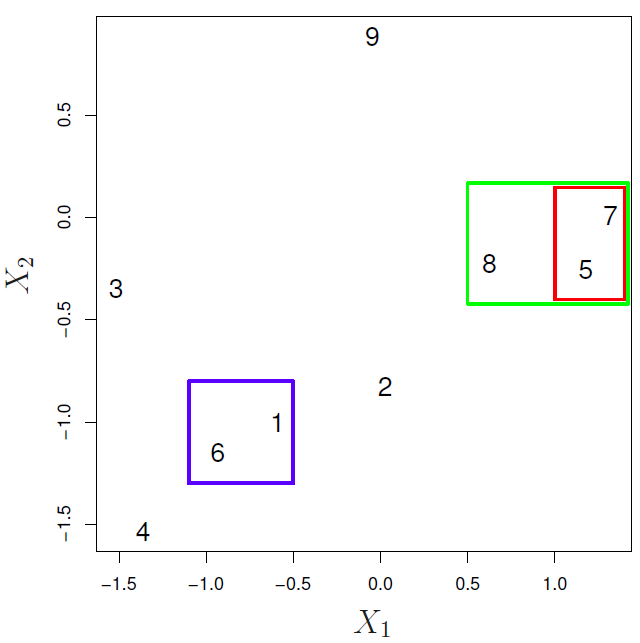

It refers to a very broad set of techniques for finding subgroups, or clusters, in a data set. Some applications could be to:
Find few different unknown subtypes of breast cancer.
Perform market segmentation by identify subgroups of people who might be more likely to purchase a particular product.
11.1.1 K-means clustering
In K-means clustering, we seek to partition the observations into a pre-specified number of non-overlapping clusters\(K\).
For this method, the main goal is to classify observations within clusters with high intra-class similarity(low within-cluster variation), but with low inter-class similarity.
Mathematical Description
Let \(C_1, \dots, C_K\) denote sets containing the indices of the observations in each cluster, where:
Each observation belongs to at least one of the \(K\) clusters. \(C_1 \cup C_2 \cup \dots \cup C_K = \{1, \dots,n\}\)
No observation belongs to more than one cluster. \(C_k \cap C_{k'} = \emptyset\) for all \(k \neq k'\).
\(W(C_k)\) represent the amount by which the observations within a cluster differ from each other. There are many possible ways to define this concept, but the most common choice involves squared euclidean distance, which is sensitive to outliers and works better with gaussian distributed features.
\(|C_k|\): Denotes the number of observations in the \(k\)th cluster
Distance alternatives
Some alternatives to the euclidean distance more robust to outliers and Non-normal distributions are:
Manhattan distance
Minkowski distance
Gower distance
if you are analyzing unscaled data where observations may have large differences in magnitude but similar behavior then a correlation-based distance is preferred like:
\(1 - \text{Pearson correlation}\)
\(1 - \text{Spearman correlation}\)
\(1 - \text{Kendall Tau correlation}\)
Aproximation algorithm
As solving this problem would be very difficult, since there are almost \(K^n\) ways to partition n observations into \(K\) clusters, but we can use a very simple algorithm to find local optimum.
Since the results obtained will depend on the initial (random) cluster assignment of each observation it is important to run the algorithm multiple times (10-20) from different random initial configurations (random starts). Then one selects the solution with the smallest objective.

Coding example
To perform k-means clustering on mixed data we need to:
Convert any ordinal categorical variables to numeric
Convert nominal categorical variables to one-hot encode
Scale all variables
Selecting the number of clusters
\(k\)is predetermined by external resources or knowledge.
\(k = \sqrt{n/2}\) rule of thumb
elbow method
Compute k-means clustering for different values of \(k\) (1-20)
For each \(k\), calculate the total within-cluster sum of squares (WSS).
Plot the curve of WSS according to the number of clusters \(k\)
The location of a bend (i.e., elbow) in the plot is generally considered as an indicator of the appropriate number of clusters.
my_basket<-data.table::fread("https://koalaverse.github.io/homlr/data/my_basket.csv")#The results show the “elbow” appears to happen when k = 5factoextra::fviz_nbclust(my_basket, kmeans, k.max =25, method ="wss", diss =factoextra::get_dist(my_basket, method ="spearman"))

Partitioning around medians (PAM)
It has the same algorithmic steps as k-means but uses the median rather than the mean to determine the centroid; making it more robust to outliers.
As your data becomes more sparse the performance of k-means and hierarchical clustering become slow and ineffective. An alternative is to use the Gower distance, which applies a particular distance calculation that works well for each data type.
ordinal: variable is first ranked, then Manhattan distance is used with a special adjustment for ties.
nominal: variables with \(k\) categories are first converted into \(k\) binary columns (i.e., one-hot encoded) and then the Dice coefficient is used. To compute the dice metric for two observations \((X,Y)\) the algorithm looks across all one-hot encoded categorical variables and scores them as:
a — number of dummies 1 for both observations
b — number of dummies 1 for \(X\) and 0 for \(Y\)
c - number of dummies 0 for \(X\) and 1 for \(Y\)
d — number of dummies 0 for both and then uses the following formula:
\[
D = \frac{2a}{2a + b +c}
\]
# Original data minus Sale_Priceames_full<-AmesHousing::make_ames()|>subset(select =-Sale_Price)# Compute Gower distance for original datagower_dst<-cluster::daisy(ames_full, metric ="gower")# You can supply the Gower distance matrix to several clustering algospam_gower<-cluster::pam(x =gower_dst, k =8, diss =TRUE)
clustering large applications (CLARA)
It uses the same algorithmic process as PAM; however, instead of finding the medoids for the entire data set it considers a small sample size and applies k-means or PAM.
It doesn’t require to define the number of clusters.
It returns an attractive tree-based representation (dendrogram).
It assumes that clusters are nested, but that isn’t true k-means clustering coud yield better.
Understanding dendrograms
In general we can say that:
Each leaf represent an observation
Similar the groups of observations are lower in the tree
Different the groups of observations are near the top of the tree
The height of the cut controls the number of clusters obtained.

In the next example:
{1,6} and {5,7} are close observations

Observation 9 is no more similar to observation 2 than it is to observations 8, 5, and 7, as it was fused at higher height of the cut.
Linkage
It measures the dissimilarity between two clusters. To do so we have the next methods:
AGNES clustering
Complete (maximal intercluster dissimilarity): Record the largest dissimilarity between cluster \(A\) and \(B\). It tends to produce more compact clusters.
Ward’s minimum variance: Minimizes the total within-cluster variance. At each step the pair of clusters with the smallest between-cluster distance are merged. Tends to produce more compact clusters.
DIANA clustering
Average (mean intercluster dissimilarity): Record the average dissimilarity between cluster \(A\) and \(B\). It can vary in the compactness of the clusters it creates.
Single (minimal intercluster dissimilarity): Record the smallest dissimilarity between cluster \(A\) and \(B\). It tends to produce more extended clusters.
Centroid: Computes the dissimilarity between the centroid for cluster \(A\) (a mean vector of length \(p\), one element for each variable) and the centroid for cluster \(B\). It is often used in genomics, but inversions can lead to difficulties in visualizing and interpreting of the dendrogram.
Hierarchical Clustering Types
AGNES (bottom-up) versus DIANA (top-down) clustering
Agglomerative Clustering (AGNES, Bottom-up)
Defining a dissimilarity measure between each pair of observations, like Euclidean distance and correlation-based distance.
Defining each of the \(n\) observations as a cluster.
Fusing the most similar 2 clusters and repeating the process until all the observations belong to one single cluster.
Step 1
Step 2
Step 3

It is good at identifying small clusters.
Coding example
# Helper packageslibrary(dplyr)# for data manipulationlibrary(ggplot2)# for data visualizationames_scale<-AmesHousing::make_ames()|>select_if(is.numeric)|># select numeric columnsselect(-Sale_Price)|># remove target columnmutate_all(as.double)|># coerce to double typescale()# center & scale the resulting columns# For reproducibilityset.seed(123)# Dissimilarity matrixd<-dist(ames_scale, method ="euclidean")cluster_methods<-c("average","single","complete","ward.D")data.table::setattr(cluster_methods,"names",cluster_methods)sapply(cluster_methods, \(x)fastcluster::hclust(d, method =x)|>cluster::coef.hclust())|>sort(decreasing =TRUE)
ward.D complete average single
0.9972137 0.9267750 0.9139303 0.8712890
Divisive Clustering (DIANA, top-down)
Defining a dissimilarity measure between each pair of observations, like Euclidean distance and correlation-based distance.
Defining the root, in which all observations are included in a single cluster.
The current cluster is split into two clusters that are considered most heterogeneous. The process is iterated until all observations are in their own cluster.